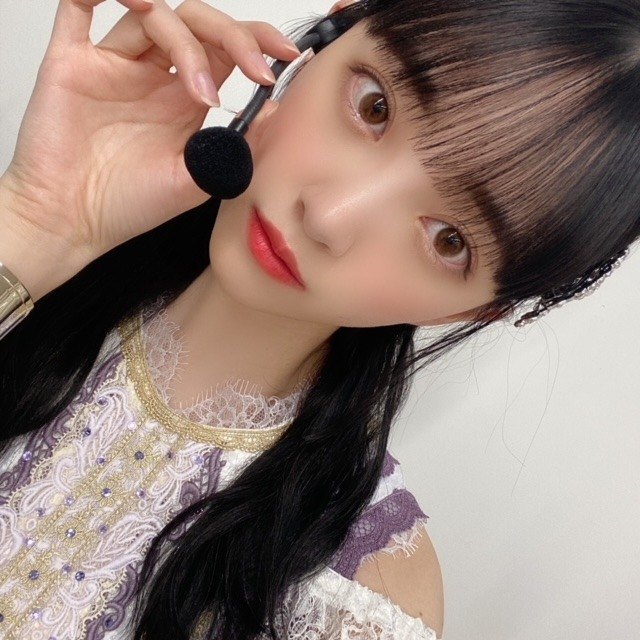
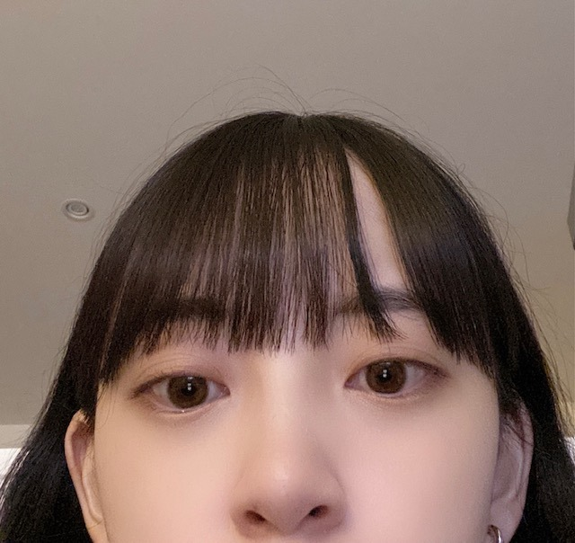

2020/1024Sat耳が冷える
この間、夢に白石さんが出てきて
一緒にカフェ行ったりお買い物したりして
楽しかったなあㅠ_ㅠ
私が卒業したらたくさん遊んでくださいって言ったらいいよって言って頭ぽんぽんしてくれて
幸せな夢すぎて、朝パッておきて
はあ、夢かあって寂しさと虚しさがすごかったです。
白石さんの笑顔が夢の中でもキラキラ輝いてて
私がすごいはしゃいであのお店も見ましょう!って
振り回してたんだけど
優しく全部一緒に回ってくれて...
夢ってたまにタイミングや内容がどんぴしゃだったりで凄い考えさせられる時もありますよね

残りの時間、大切にしたいです
人は、失ってから大切な存在に気づくことが多い愚かな生き物だけど、だからこそ意識して"今"を大切にできる人になりたいな

カメラ機能を鏡がわりによくするのですが
気付いたら何枚か撮れてたシリーズ
CDTV LIVE LIVEもよろしくお願いします！
今日もがんばろう〜〜
では
2020/10/24 12:36


コメント(307)
まいやんあと少しか〜〜涙
大好きでーす！！
全然、実感わかない。
未央奈ちゃんが卒業しても一生応援します
それだけまいやんが好きなんだね
卒コンまであと1週間やからちょっと悲しいけど
卒コン楽しみにしてる！
最近とても寒いですね。
まいやんの卒業ももうすぐで自分もとても悲しいです。
悔いが残らないように大切にしてくださいね。
堀ちゃん今日も頑張って‼︎
CDTV楽しみにしてるよ！
まいやん卒業寂しいだろうけど頑張ってね！
今日も1番可愛い！
可愛よ!❤️❤️
眠りがあさいと夢ってみんるだっけ？？
卒業は寂しくなるけど
その前にもっともっと思い出作って！！
素敵な夢やね〜
でも声掛けたら正夢になるかもよ…！
今日もがんばろうね(^^)
すっかり寒くなってきましたね
かなりんとはあと1日、まいやんとはあと4日ですね。
僕も『今』を大切にしていきたいです
CDTV 楽しみです
メドレーだというのでTVの前で待機してます‼️
体調に気を付けてください。
ではでは〜
かなさんも25までだし...
寂しくなります、
CDTVまいやんとラストステージ楽しんでください！
ブログ更新ありがとうございます！
まいやんの卒コン、観る側も既に緊張してきたり色々な想いをめぐらせてるけどきっとメンバーはその何倍も色んな想いが込み上げてくる期間だよね。
乃木坂の皆さんの仲の良さというか本当に心から信頼し合ってる関係性がこういうときにとくに強く垣間見れて、応援してて良かったって気持ちになります。
最近自分は夢をよくみます笑
夢をみるってことは熟睡出来ない証拠なんですが
自分は夢を見るのが楽しいので全然良いかなって思ってます
最近はまた未央奈が夢に出てきて最高な時間でした笑
乃木坂メンバーが夢によく出てくるのでほんとに幸せです
人は失ってから大切な存在に気づくってめっちゃいい言葉だなって思いました
自分も今を大切に生きていこうと思います
ではは
CDTVみまーす
お仕事頑張ってください
まいやんの夢は幸せすぎる！
メンバーの夢はほんとにおきて悲しくなるよ、、
残りの時間大切にはほんとにその通りだね
のぎ動画とかAbemaTV見なきゃ！
カウントダウンライブ頑張って！
残り時間大切にして悔い残らないようにいい思いで沢山作ってね(^_^)v
CDTV見るからね(^-^)v頑張ってね(^_^)v
今日は、天気いいね(^-^)v夜は、寒いから風邪引かないように気を付けてね(^_^)v
これからも頑張ってね(*^^*)未央奈可愛い(*^^*)
愛してる❤❤❤❤❤❤❤❤❤❤❤❤❤❤❤❤❤❤❤
自分は耳が冷える時はニット帽被るんですけど、最近耳当てしてる人見かけませんね、お見かけになったらラッキーだと思います。良い夢見れたら良いですね。
それでは
スピッツの曲と同じく、将来、正夢にな
りそうですね。
人間は愚かな生き物。なんか哲学的。
愚かってことを知ってるだけ賢い？
無知の知だね。
気付いたら写真撮れてる、よくわかりま
す。僕は知らぬ間に、よく手の写真が撮
れてます。
｢今｣を大切に。今日もお互い頑張ろね！
まいやん卒業まであと少し、寂しいね。
堀ちゃんの見た夢、想像しただけでほっこりしちゃうよ。
失ってから大切なものに気づく
みんなそんなもんだと思うよ、決して愚かではないですよ。
CDTV、卒コン、まいやんもだけど
堀ちゃん見るの楽しみだよ。
では
CDTVライブライブ楽しみです。
最近夢は見てないや
実際は見てるけど、覚えてないだけかもしれないけど
みおなかわいい
いい夢見ても起きた時残念って気持ちになるし、悪い夢は見たくないし…。ちょうどいい夢って難しいですよね。
僕も時間を大切にしたいと思います。CDTV楽しみにしてます！
写真ありがとうございます！
まいやんとみおちゃんが2人でお出かけしたらきっと微笑ましい光景になるんだろうな
麻衣やんと未央奈さんがお買い物。最強コンビ。
一緒にいられる時間、大事にね
では
ひでき
まいやんの卒業後遊びに行けるの楽しみだね！
まいやんのいる乃木坂での時間、最後まで思いっきり楽しんで！
CD TVとライブ楽しみにしてるね！
カメラを鏡がわりにして気が付いたら写真撮ってること、俺もよくある笑
今年は「まいやんブルー」にたそがれる秋です。
未央奈さん、こんにちは。
良い夢を見られて、うらやましいです。
時々、人生そのものが夢のような気もします。だって考えてみてください。今から100年も経ったら、周りの人も風景も変わってします。自分もいなくなるし、覚えていてくれる人も相当少なくなる。だから、人生って一瞬のように思えるし、夢のように思えます。
その夢の中での夢は、楽しく幸せなものでありたいですね。
ほんとにしあわせって、身近にあって、保護色のように隠れているものなんですね。乃木坂の皆さんの歌からいろんな気づきがあります。
保護色に隠れている小さな幸せをたくさん見つけることができる人が、幸せになれるのかもしれません。
あと4日、今こうやってちょっと憂鬱なアンニュイな感情を持ちつつ、4日後を心待ちにしている時間がしあわせです。
同郷の者として、未央奈さんの活躍を嬉しく思っています。
次世代の乃木坂を引っ張って行く人として、ますますのご活躍を期待しております。
私も夢に乃木坂46さんが出てくる時があります！
その時はそのときで、起きたくないという気持ちでした！
また続いて欲しいっていう感じでした！
私は乃木坂46というグループに出会えて幸せです！
それに乃木坂46に出会えたから辛い時でも救われました！
最強グループだと思います！ずっとあって欲しいです！
いつか乃木坂46な関係するお仕事につきたいです！
そのためにも高校生活頑張ります！
そして、好きなことを仕事にしたいです！
きをつけてね！
夢にまいやんが出てきて嬉しいね！まいやんの卒業がもう少しだから自分も凄く寂しくて悲しいよ。
自分も仕事の事で凄く不安になってたりしてた日があってその日夜に夢に凄く辛い夢をみたりして凄く考えさせられる事があったよ。
今を大切にできる人になれるように頑張るね！
ブログの写真凄く可愛い～♪未央奈ちゃんの可愛いくて素敵な笑顔とか見ると凄く癒されるよ♪
CDTV LIVE LIVE楽しみにしてるね♪
また、ブログの更新楽しみにしてるね♪未央奈ちゃん大好きだよ♪
堀 未央奈神推し秀喜より！(≧∇≦)
悔いが残らないように頑張ってねー！
なんて素晴らしい夢なんだ…みおちゃんとまいやんが遊んでる情景を（勝手に）想像したら幸せな気分になったし、泣いちゃいそうにもなった…
CDTV観るぞ〜い！ライブのリハも頑張ってね〜！
まいやんの卒業ライブまで、一週間もないけどいつも乃木坂46の先頭になり、支えてくれたまいやんのために笑顔で一緒に送りだそう！
堀ちゃんのライブパフォーマンスを、とても楽しみにしてます！
堀ちゃんにずっきゅーん！
昨日、白石麻衣カフェに行ってきました。
CDTVがまいやんの最後の歌番組になるんですね。
寂しいですが、28日の卒業ライブまで、メモリアルブックを見ながら過ごしていきたいと思います。
これからも乃木坂４６をずっと応援していきます。
今日も白くて小さなうまいロールパンを食うよ～(^ ^)(↑笑)
♡みおちすきだよ♡
来週の最後のCDTVライブライブもそして白石さんの卒業ライブもただ単に楽しむってのはムリかもしれないけど、しっかりと白石さんの雄姿を目にも脳裏にも焼き付けて今後の未央奈ちゃんの活動の糧にしてください。
僕らもメンバーと一緒にいる白石さんの姿を記憶に刻みますから。
CDTV楽しみにしています。
写真可愛いですね。
こんにちは
まいやん、、、と一緒
良い夢を見たね☺
俺はよく悪夢を見ます
ホラーの世界に自分が
最強に怖いです、、
飛び起きます
CDTV来週？
必ず観ます
では
コメントする